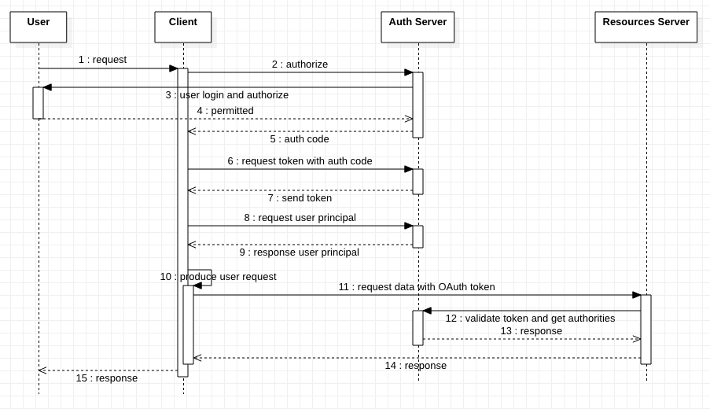

This post, I will show you how to use OAuth 2 with Spring Security. There are only few changes between JWT token or not, so, I show them together.
Why use OAuth
There are multiple scenarios to make us to find a way to integrate with other services.
For example,
Some of companies provides data storing services, you find a useful usage and they did not provided. So, you want to create app for users. But, there is a problem, the data is stored in services of those companies, you need get the permissions to access them.
The another scene is, you are working for a big company. Your company has multiple services, but don’t want user login again and again when they using different services. You should make sure user only need login once and can using all services with their permissions.
To make these scenarios to true, you can use OAuth.
If you need fetch resources from 3rd party, you need use it as authentication and authorization service.
If you just need use it to make single point login, you just need use it as authentication service, and ignore authorities which are got from authentication service and it should be handled by yourself.
What provided by OAuth
OAuth provides a safety, open and simple way to authenticate and authorize 3rd party clients to access user’s resources without account and password of user. You can use it get permissions to access user’s resources on 3rd party services, or provide unique authentication and authorization for your all services.
There are 4 authentication modes
Authorization code
Implicit
Resource owner password credentials
client credentials
In this post, we only talk how to use ‘Authorization code’ mode. It is the strictest mode in these 4 modes.
Work flow of Authorization Code Mode

With above chart, when user send request to client and still not sign in, the client will redirect to auth server which is provided by authorization provider to authenticate.
After user signed in auth server and permitted the permissions which are requested, auth server will send the auth code to client. This code only can be used once to get the OAuth token from auth server. When get the token, client may request user’s principal from auth server or not.
Latest, client will request resources which are user wanted with OAuth token from resources server, and send response to user.
You can see, as client, it never touch the user account and password. Sign in process is done on auth server and client only get the token. And when client request resources from resources server, the token also need be validated by auth server. It will make user account will not be known and embezzled by others.
Implementation
Now, let’s start to implement them.
Auth Service
First, we need provide an auth server with Spring Security and OAuth 2. There are 3 packages which we need use
After project is created, we need add config code which inherited from WebSecurityConfigurerAdapter which looks like normal Spring Security configurations. It is used to manage login actions with username and password.
@Bean public JwtAccessTokenConverter jwtAccessTokenConverter(){ JwtAccessTokenConverter converter = new JwtAccessTokenConverter(); converter.setKeyPair(this.keyPair);
/** * there is a chance to modify the access token when convert it */ DefaultAccessTokenConverter accessTokenConverter = new DefaultAccessTokenConverter(); accessTokenConverter.setUserTokenConverter(new SubjectAttributeUserTokenConverter()); converter.setAccessTokenConverter(accessTokenConverter);
if (this.useJwtToken) { TokenEnhancerChain tokenEnhancerChain = new TokenEnhancerChain(); tokenEnhancerChain.setTokenEnhancers( Arrays.asList(tokenEnhancer(), jwtAccessTokenConverter() // original token will be converted to jwt token ));
endpoints .accessTokenConverter(jwtAccessTokenConverter) // used to decode jwt token when received it .tokenEnhancer(tokenEnhancerChain); // used to generate jwt token } else { endpoints.tokenEnhancer(tokenEnhancer); } }
/** * If you want to add more additional information to token, you can do it here like following example */ // User user = (User) oAuth2Authentication.getPrincipal(); // final Map<String, Object> additionalInfo = new HashMap<>(); // additionalInfo.put("user_name", user.getUsername()); // ((DefaultOAuth2AccessToken) oAuth2AccessToken).setAdditionalInformation(additionalInfo);
publicclassSubjectAttributeUserTokenConverterextendsDefaultUserAuthenticationConverter{ @Override public Map<String, ?> convertUserAuthentication(Authentication authentication) { returnsuper.convertUserAuthentication(authentication);
/** * You can do some customization here as following example code */ // Map<String, Object> response = new LinkedHashMap<>(); // response.put("sub", authentication.getName()); // if (authentication.getAuthorities() != null && !authentication.getAuthorities().isEmpty()) { // response.put(AUTHORITIES, AuthorityUtils.authorityListToSet(authentication.getAuthorities())); // } // return response; } }
@Service publicclassDemoClientDetailsServiceImplimplementsClientDetailsService{ private Map<String, DemoClientDetails> clientDetailsMap = new HashMap<String, DemoClientDetails>() {{ put("client", new DemoClientDetails( "client", null, new BCryptPasswordEncoder().encode("secret"), new HashSet<String>() {{ add("APP"); }}, new HashSet<String>() {{ add("authorization_code"); add("refresh_token"); // MUST add this if you need refresh token }}, new HashSet<String>() {{ add("http://oauthcli:8080/login/oauth2/code/oauthsvr"); }}, new HashSet<GrantedAuthority>() {{ add( new SimpleGrantedAuthority("READ")); }}, // MUST NOT be null (int) TimeUnit.SECONDS.toSeconds(30), (int) TimeUnit.DAYS.toSeconds(15), null)); }};
If you use web browser to test the client, you need implement a controller to response the ‘user-info-uri’ endpoint request and provide user’s principal.
plugins { id 'org.springframework.boot' version '2.2.7.RELEASE' id 'io.spring.dependency-management' version '1.0.9.RELEASE' id 'java' }
group = 'com.simplejourney' version = '0.0.1-SNAPSHOT' sourceCompatibility = '1.8'
repositories { mavenCentral() }
dependencies { // this must be added for 2.2.7.RELEASE for both of JWT and opaque token, otherwise, // ---------------------------------- // java.lang.IllegalStateException: Failed to introspect Class [org.springframework.security.oauth2.server.resource.introspection.NimbusOpaqueTokenIntrospector] from ClassLoader // ---------------------------------- // exception will be thrown during launching application // see [Dependency issues in resource server #8391](https://github.com/spring-projects/spring-security/issues/8391) implementation 'com.nimbusds:oauth2-oidc-sdk:8.4'
We use scope value of client here. And need add ‘SCOPE_’ prefix for it because when NimbusOpaqueTokenIntrospector parsing the response of auth server, it will append the ‘SCOPE_‘ prefix for all scope names and ‘ROLE_‘ prefix for all authorities.
But, is you use ‘.hasRole(role_name)’, you need not add ‘ROLE_‘ prefix, otherwise, an error will be occurred on it to tell you removing the prefix.
Because the type of scopes of ClientDetails is Set and it will be serialized to a JSONARRAY, but getScope() method in TokenIntrospectionSuccessResponse only can parse JSONString for ‘scope’ field. So, we need add this introspector to override and get scope and authorities from response.
/** * We need replace introsepctor with customized because getScope() method of TokenIntrospectionSuccessResponse cannot deserialize scope of type Set<String> * see [TokenIntrospectionSuccessResponse doesn't support parsing scopes presented as JSONArray #7563](https://github.com/spring-projects/spring-security/issues/7563) */
@Override public OAuth2AuthenticatedPrincipal introspect(String token){ OAuth2AuthenticatedPrincipal principal = this.delegate.introspect(token); return oAuth2AuthenticatedPrincipal(principal); }
private DefaultOAuth2AuthenticatedPrincipal oAuth2AuthenticatedPrincipal(OAuth2AuthenticatedPrincipal principal){ /** * In ClientDetails interface of oauth2 server, there are 2 types of things to indicate the permissions of client * 1. scopes * 2. authorities * You can get both of them from 'principal.attributes' which got from auth server * Generally, you can use scope to grant permission for client, -> 'SCOPE_' * And also, you can use 'authorities' to do it. -> 'ROLE_' * Or, both of them * * But, notice, the scopes are permissions of client, and authorities are user's. * See [Spring oauth2 scope vs authorities(roles)](https://stackoverflow.com/questions/32092749/spring-oauth2-scope-vs-authoritiesroles) * And [The OAuth 2.0 Authorization Framework - 3.3. Access Token Scope](https://tools.ietf.org/html/rfc6749#section-3.3) */